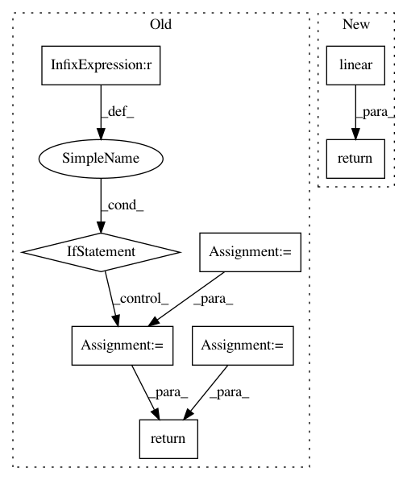

e488e3c4436b10caeed246573bdf030c65f434af,torch/nn/functional.py,,linear,#Any#Any#Any#,1737
Before Change
return handle_torch_function(linear, (input, weight), input, weight, bias=bias)
if input.dim() == 2 and bias is not None:
// fused op is marginally faster
ret = torch.addmm(bias, input, weight.t())
else:
output = input.matmul(weight.t())
if bias is not None:
output += bias
ret = output
return ret
def bilinear(input1: Tensor, input2: Tensor, weight: Tensor, bias: Optional[Tensor] = None) -> Tensor:
r
After Change
if has_torch_function_variadic(input, weight):
return handle_torch_function(linear, (input, weight), input, weight, bias=bias)
return torch._C._nn.linear(input, weight, bias)
def bilinear(input1: Tensor, input2: Tensor, weight: Tensor, bias: Optional[Tensor] = None) -> Tensor:
r
In pattern: SUPERPATTERN
Frequency: 3
Non-data size: 8
Instances
Project Name: pytorch/pytorch
Commit Name: e488e3c4436b10caeed246573bdf030c65f434af
Time: 2021-02-02
Author: jiej@nvidia.com
File Name: torch/nn/functional.py
Class Name:
Method Name: linear
Project Name: NVIDIA/sentiment-discovery
Commit Name: ef87f1a071c6b8ca5607874a1a7d77d8a1ab2821
Time: 2018-11-19
Author: raulp@nvidia.com
File Name: model/sentiment_classifier.py
Class Name: SentimentClassifier
Method Name: forward
Project Name: pytorch/pytorch
Commit Name: 4d703d040b3a08d2a9997bbdff1a58e8dcadedf6
Time: 2021-02-04
Author: jiej@nvidia.com
File Name: torch/nn/functional.py
Class Name:
Method Name: linear